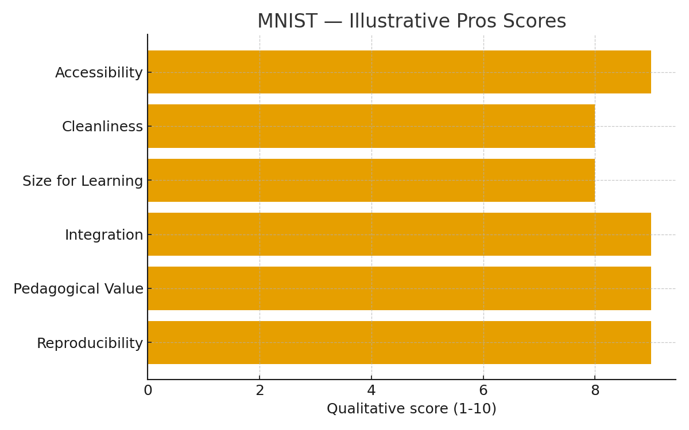
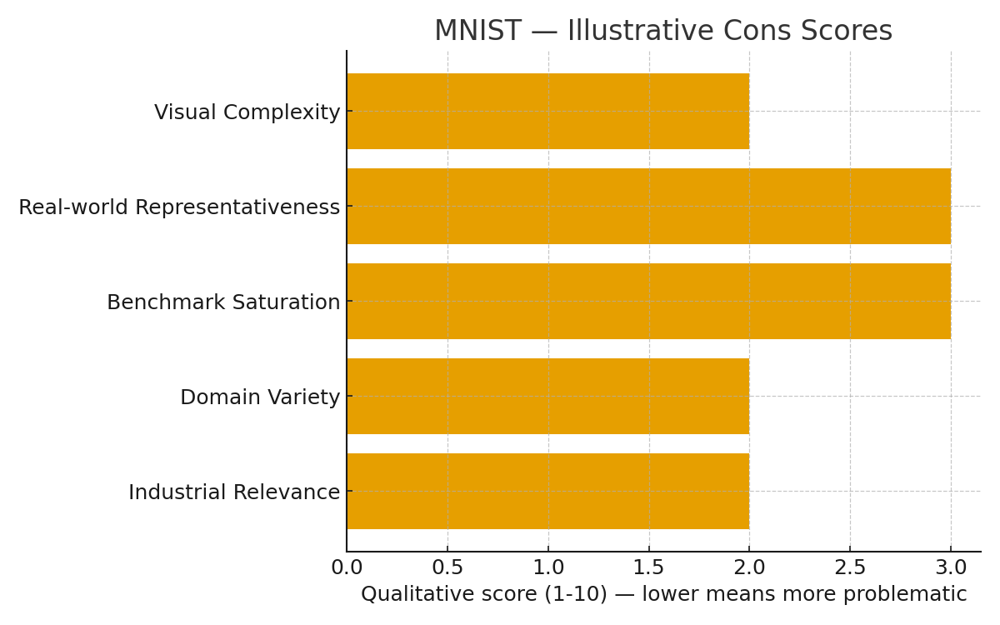

Untuk memvisualisasikan keunggulan, keterbatasan, dan tingkat kesulitan dataset MNIST, saya menulis skrip Python sederhana menggunakan pustaka Matplotlib dan NumPy. Pendekatan ini memungkinkan saya membuat grafik ilustratif tanpa perlu data numerik eksperimen yang kompleks.
Berikut cuplikan kode yang saya jalankan:
# ============================================================
# Visualisasi Keunggulan, Keterbatasan, dan Varian Dataset MNIST
# ============================================================
import matplotlib.pyplot as plt
import numpy as np
from pathlib import Path
# Membuat folder output untuk menyimpan hasil grafik
out_dir = Path('./output')
out_dir.mkdir(exist_ok=True)
# ------------------------------------------------------------
# Grafik 1: Keunggulan MNIST (Pros)
# ------------------------------------------------------------
labels_pros = ["Accessibility", "Cleanliness", "Size for Learning",
"Integration", "Pedagogical Value", "Reproducibility"]
scores_pros = [9, 8, 8, 9, 9, 9] # skala 1–10
fig1, ax1 = plt.subplots(figsize=(8,5))
y_pos = np.arange(len(labels_pros))
ax1.barh(y_pos, scores_pros)
ax1.set_yticks(y_pos)
ax1.set_yticklabels(labels_pros)
ax1.invert_yaxis()
ax1.set_xlabel('Qualitative Score (1–10)')
ax1.set_title('MNIST — Illustrative Pros Scores')
plt.tight_layout()
plt.savefig(out_dir / 'mnist_pros.png', dpi=150)
plt.close()
# ------------------------------------------------------------
# Grafik 2: Keterbatasan MNIST (Cons)
# ------------------------------------------------------------
labels_cons = ["Visual Complexity", "Real-world Representativeness",
"Benchmark Saturation", "Domain Variety", "Industrial Relevance"]
scores_cons = [2, 3, 3, 2, 2] # makin kecil = makin bermasalah
fig2, ax2 = plt.subplots(figsize=(8,5))
y_pos = np.arange(len(labels_cons))
ax2.barh(y_pos, scores_cons)
ax2.set_yticks(y_pos)
ax2.set_yticklabels(labels_cons)
ax2.invert_yaxis()
ax2.set_xlabel('Qualitative Score (1–10) — Lower = More Problematic')
ax2.set_title('MNIST — Illustrative Cons Scores')
plt.tight_layout()
plt.savefig(out_dir / 'mnist_cons.png', dpi=150)
plt.close()
# ------------------------------------------------------------
# Grafik 3: Perbandingan Tingkat Kesulitan Dataset MNIST dan Variannya
# ------------------------------------------------------------
variants = ["MNIST", "Fashion-MNIST", "EMNIST", "KMNIST", "MNIST-C"]
difficulty = [2, 6, 7, 7, 8] # skala kesulitan 1–10
fig3, ax3 = plt.subplots(figsize=(9,5))
x = np.arange(len(variants))
ax3.bar(x, difficulty)
ax3.set_xticks(x)
ax3.set_xticklabels(variants)
ax3.set_ylabel('Illustrative Difficulty (1–10)')
ax3.set_title('Difficulty Comparison: MNIST and its Variants')
plt.tight_layout()
plt.savefig(out_dir / 'mnist_variants.png', dpi=150)
plt.close()
print()
Script Python diatas menghasilkan tiga grafik utama:
- Grafik Keunggulan (Pros) — menunjukkan aspek-aspek positif MNIST seperti aksesibilitas, keseragaman, dan nilai pedagogisnya.
- Grafik Keterbatasan (Cons) — menggambarkan sisi lemah seperti rendahnya kompleksitas visual dan representasi dunia nyata.
- Grafik Perbandingan Kesulitan Dataset — memperlihatkan tingkat kesulitan relatif antara MNIST dan beberapa turunannya seperti Fashion-MNIST, EMNIST, KMNIST, serta MNIST-C.
 |
 |
Keunggulan MNIST
1. Kesederhanaan dan aksesibilitas:
Salah satu aspek yang membuat MNIST tetap digunakan secara luas adalah kemudahan akses dan
penggunaan. Dengan satu baris kode di library seperti TensorFlow atau PyTorch, dataset dapat langsung diunduh dan siap dipakai
(contoh: tf.keras.datasets.mnist.load_data(), torchvision.datasets.MNIST). Kesederhanaan ini penting dalam konteks
pendidikan — mahasiswa dapat memahami alur pelatihan model dari awal (data → model → evaluasi) tanpa tersangkut pada proses pembersihan data
yang kompleks. Hasil pelatihan dan metrik juga mudah dibandingkan antar-peneliti karena format dan pembagian train/test yang standar.
2. Kualitas anotasi dan normalisasi:
MNIST bukan sekadar kumpulan scan tulisan tangan — dataset ini mengalami proses normalisasi geometri: setiap digit diskalakan agar muat dalam kotak 20×20, kemudian ditempatkan pada kanvas 28×28 dan dipusatkan sehingga pusat massa piksel mendekati tengah. Proses ini menghasilkan data yang relatif bersih, konsisten, dan dapat digunakan untuk eksperimen yang menuntut kontrol variabel yang ketat (mis. membandingkan arsitektur jaringan).
3. Ukuran yang ideal untuk pembelajaran awal dan eksperimen cepat:
Dengan 60.000 sampel pelatihan, MNIST cukup besar untuk mempelajari pola tulisan tangan tetapi tetap kecil secara komputasi jika dibandingkan dataset modern. Ini membuatnya ideal untuk: - eksperimen hyperparameter secara luas; - demonstrasi pedagogis; - pengujian hipotesis kecil; - benchmarking kecepatan training pada hardware. Kecepatan iterasi ini membantu banyak peneliti mempercepat siklus eksperimen.
4. Integrasi dan dukungan luas di ekosistem ML:
MNIST sudah menjadi bagian dari dokumentasi dan tutorial sejumlah besar pustaka (Keras, PyTorch, scikit-learn). Dokumentasi, contoh code, notebook, dan kompetisi di platform seperti Kaggle menjadikannya titik awal yang ramah bagi pemula. Selain itu, ekosistem ini mempermudah reproducibility karena banyak eksperimen menggunakan versi data dan loader yang sama.
5. Relevansi pedagogis & kemampuan menjelaskan:
Ketika tujuan adalah mengajarkan konsep dasar—seperti convolutional filters, backpropagation, regularization, dan overfitting—MNIST sangat berguna. Visualisasi filter pada CNN kecil, interpretasi neuron, serta demonstrasi grad-CAM atau occlusion sensitivity menjadi lebih mudah dipahami pada citra 28×28.
6. Stabilitas benchmark & reproducibility:
Data yang statis, jumlah yang besar namun terbatas, serta pembagian train/test tetap membantu memastikan hasil yang dapat direplikasi. Ini penting untuk eksperimen metodologis yang mengharuskan perbandingan yang adil.
Keterbatasan MNIST
1. Kompleksitas visual rendah:MNIST berisi citra grayscale sederhana tanpa tekstur, warna, atau latar yang rumit. Objek hanya satu per gambar, selalu berada di tengah, dan memiliki kontras tinggi terhadap latar. Model yang menunjukkan performa tinggi di MNIST belum tentu sanggup memproses gambar berwarna beresolusi tinggi dengan banyak objek (mis. scene dari kamera jalan).
2. Tidak mewakili kondisi dunia nyata:
Faktor penting pada citra dunia nyata—pencahayaan tidak merata, bayangan, background clutter, noise sensor—tidak tercakup dalam MNIST. Oleh karena itu, model yang "terlatih" pada MNIST umumnya memiliki ketahanan (robustness) rendah terhadap gangguan tersebut. Versi yang menambahkan gangguan seperti MNIST-C menunjukkan penurunan performa signifikan pada model yang sebelumnya tampak sempurna di MNIST.
3. Benchmark jenuh & overfitting akademik:
Banyak arsitektur modern telah mencapai akurasi mendekati 99.8%—ruang peningkatan di MNIST menjadi terbatas. Sejumlah penelitian fokus pada kenaikan akurasi yang sangat kecil (mis. 99.72% → 99.74%), yang seringkali tidak memiliki dampak praktis signifikan. Hal ini dapat menyebabkan alokasi sumber daya penelitian ke arah optimasi yang tidak berdampak besar pada masalah nyata.
4. Kurangnya variasi domain:
Semua sampel berasal dari sumber relatif homogen (varian tulisan tangan tertentu), sehingga model tidak diuji pada domain shift atau masalah adaptasi domain. Untuk riset yang menekankan generalisasi across-domains, MNIST harus diasosiasikan dengan varian dataset lain.
5. Keterbatasan untuk skala industri:
Aplikasi industri (OCR untuk dokumen berwarna, deteksi objek pada citra medis, analisis video) biasanya membutuhkan dataset yang lebih rumit dan ukuran yang lebih besar. Mengandalkan MNIST sebagai satu-satunya bukti performa untuk deployment komersial dapat menimbulkan risiko nyata.
Alternatif & Evolusi Dataset
Untuk mengatasi keterbatasan tersebut, komunitas ML mengembangkan beberapa dataset turunan dan alternatif:
- Fashion-MNIST (2017): mengganti angka dengan gambar pakaian (10 kelas), memberi tantangan tekstur dan bentuk yang lebih kaya.
- EMNIST (2017): memperluas menjadi huruf alfabet dan digit sehingga menyajikan masalah multi-class yang lebih kompleks.
- KMNIST (2019): dataset tulisan Kana Jepang — memperkenalkan struktur karakter yang berbeda.
- MNIST-C (2021): menambahkan gangguan (noise, blur, fog, brightness dll.) untuk menguji robustness model.
Perbandingan tingkat kesulitan ilustratif antara MNIST dan variannya dapat dilihat pada grafik di bawah (angka adalah skala ilustratif 1–10; semakin tinggi berarti lebih sulit untuk model umum).
Rekomendasi praktis untuk peneliti & pengajar
- Gunakan MNIST sebagai baseline & bahan ajar: untuk demonstrasi dasar dan debugging. Pastikan Anda menyertakan konteks keterbatasan ketika mempresentasikan hasil.
- Tambahkan dataset lebih menantang untuk klaim generalisasi: seperti Fashion-MNIST, EMNIST, CIFAR-10/100, atau domain-spesifik dataset.
- Uji robustness: uji model dengan gangguan (noise, rotasi, transformasi) — MNIST-C adalah contoh bagus untuk eksperimen semacam ini.
- Laporkan metrik komprehensif: selain akurasi, tampilkan confusion matrix, per-class recall/precision, dan analisa kesalahan (error analysis).
- Hindari 'MNIST trap': jangan menjadikan kenaikan akurasi minor di MNIST sebagai satu-satunya bukti kemajuan metodologis.
Referensi: